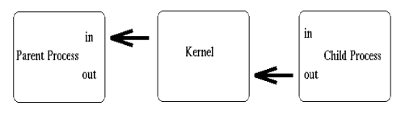

Simply put, a pipe is a method of connecting the standard output of one process to the standard input of another. Pipes are the eldest of the IPC tools, having been around since the earliest incarnations of the UNIX operating system. They provide a method of one-way communications (hence the term half-duplex) between processes.
This feature is widely used, even on the UNIX command line (in the shell).
ls | sort | lp
The above sets up a pipeline, taking the output of ls as the input of sort, and the output of sort as the input of lp. The data is running through a half duplex pipe, traveling (visually) left to right through the pipeline.
Although most of us use pipes quite religiously in shell script programming, we often do so without giving a second thought to what transpires at the kernel level.
When a process creates a pipe, the kernel sets up two file descriptors for use by the pipe. One descriptor is used to allow a path of input into the pipe (write), while the other is used to obtain data from the pipe (read). At this point, the pipe is of little practical use, as the creating process can only use the pipe to communicate with itself. Consider this representation of a process and the kernel after a pipe has been created:
From the above diagram, it is easy to see how the descriptors are connected together. If the process sends data through the pipe (fd0), it has the ability to obtain (read) that information from fd1. However, there is a much larger objective of the simplistic sketch above. While a pipe initially connects a process to itself, data traveling through the pipe moves through the kernel. Under Linux, in particular, pipes are actually represented internally with a valid inode. Of course, this inode resides within the kernel itself, and not within the bounds of any physical file system. This particular point will open up some pretty handy I/O doors for us, as we will see a bit later on.
At this point, the pipe is fairly useless. After all, why go to the trouble of creating a pipe if we are only going to talk to ourself? At this point, the creating process typically forks a child process. Since a child process will inherit any open file descriptors from the parent, we now have the basis for multiprocess communication (between parent and child). Consider this updated version of our simple sketch:
Above, we see that both processes now have access to the file descriptors which constitute the pipeline. It is at this stage, that a critical decision must be made. In which direction do we desire data to travel? Does the child process send information to the parent, or vice-versa? The two processes mutually agree on this issue, and proceed to ``close'' the end of the pipe that they are not concerned with. For discussion purposes, let's say the child performs some processing, and sends information back through the pipe to the parent. Our newly revised sketch would appear as such:

Construction of the pipeline is now complete! The only thing left to do is make use of the pipe. To access a pipe directly, the same system calls that are used for low-level file I/O can be used (recall that pipes are actually represented internally as a valid inode).
To send data to the pipe, we use the write() system call, and to retrieve data from the pipe, we use the read() system call. Remember, low-level file I/O system calls work with file descriptors! However, keep in mind that certain system calls, such as lseek(), do not work with descriptors to pipes.